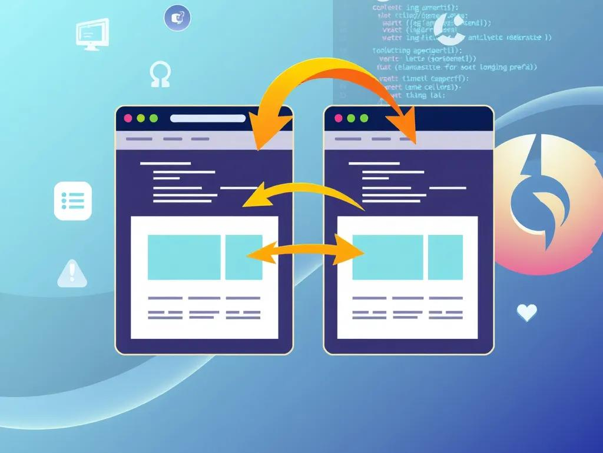

O desenvolvimento web transformou completamente a maneira como o mundo se comunica, trabalha e aprende.
A História da Web
Como tudo começou
A internet começou como um projeto militar e acadêmico, mas rapidamente evoluiu para algo muito maior.
Em 1991,
Tim Berners-Lee
criou a
World Wide Web,
permitindo que páginas fossem acessadas através de navegadores.
Os primeiros sites eram extremamente simples, compostos apenas por textos e links.
Com o passar do tempo, novas tecnologias foram surgindo, permitindo que os sites se tornassem mais rápidos,
bonitos e interativos. Atualmente, a web é essencial para empresas, entretenimento,
educação e comunicação global.
HTML5: A Estrutura da Web
O
HTML5
é a linguagem responsável pela estrutura das páginas web.
Ele organiza títulos, textos, imagens, vídeos, links e diversos outros elementos presentes em um site moderno.
Com as tags semânticas do HTML5, os sites ficaram mais organizados e acessíveis.
Elementos como <header>, <nav>, <main>, <article> e <footer>
ajudam navegadores e desenvolvedores a entenderem melhor o conteúdo da página.
Principais recursos do HTML5
Tags semânticas
Compatibilidade com vídeos
Compatibilidade com áudios
Formulários avançados
Melhor acessibilidade
Maior organização do código
CSS3: Estilo e Design
A importância do CSS3
O
CSS3
é responsável pela aparência visual dos sites.
Com ele, é possível alterar cores, fontes, espaçamentos, animações e layouts completos.
Antes do CSS, os sites possuíam um visual extremamente limitado.
Hoje, graças ao CSS3, os desenvolvedores conseguem criar interfaces modernas,
responsivas e altamente profissionais.
Recursos populares do CSS3
Flexbox
CSS Grid
Animações
Transições
Gradientes
Media Queries
JavaScript: Interatividade
Tornando os sites inteligentes
O
JavaScript
é a linguagem responsável pela interatividade das páginas web.
Com ele, os sites conseguem responder ações do usuário em tempo real.
Menus animados, validação de formulários, sliders, jogos, sistemas de login
e até aplicações completas podem ser desenvolvidas utilizando JavaScript.
O que o JavaScript pode fazer?
Manipular elementos HTML
Criar animações
Atualizar conteúdos dinamicamente
Consumir APIs
Desenvolver jogos
Criar aplicações web modernas
Front-End Moderno
O que é Front-End?
Front-end
é toda a parte visual de um site ou aplicação.
É o que os usuários enxergam e utilizam diariamente.
Os desenvolvedores front-end trabalham principalmente com
HTML,
CSS
e
JavaScript
para criar interfaces bonitas, rápidas e intuitivas.
Responsividade
Sites para todos os dispositivos
Com o crescimento do uso de celulares e tablets,
surgiu a necessidade de criar sites responsivos.
Um
site responsivo
consegue se adaptar automaticamente a diferentes tamanhos de tela.
A responsividade melhora a experiência do usuário
e também ajuda no posicionamento do site em mecanismos de busca como o
Google.
Animações na Web
Interfaces mais modernas
As animações tornaram-se uma parte importante do design moderno.
Elas ajudam a deixar os sites mais agradáveis e interativos.

Com
CSS3
e
JavaScript,
é possível criar efeitos visuais incríveis,
como transições suaves, elementos aparecendo na tela e menus animados.
Frameworks e Tecnologias Modernas
O futuro do desenvolvimento web
Os
frameworks
aceleram o desenvolvimento de aplicações modernas.
Eles oferecem ferramentas prontas que ajudam os desenvolvedores
a criarem projetos maiores e mais organizados.
Frameworks populares
React
Vue.js
Angular
Bootstrap
Tailwind CSS
Express.js
Carreira no Desenvolvimento Web
Uma das profissões mais promissoras
A carreira de
desenvolvedor web
cresce constantemente em todo o mundo.
Empresas de todos os setores precisam de profissionais capazes
de criar sistemas, sites e aplicações modernas.
Com dedicação, prática e estudos constantes,
é possível trabalhar como freelancer,
conseguir vagas em empresas ou até criar projetos próprios.